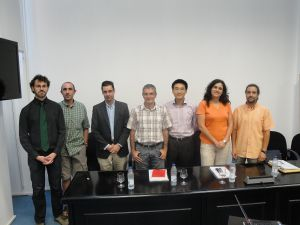

Los Generadores Central de Patrones son circuitos neuronales que se encuentran en los seres vivos, desde animales simples, como los moluscos, hasta los mamíferos superiores y los seres humanos. Ellos son los responsables del control rítmico de actividades motoras como caminar, respirar y masticar entre otros. Sus patrones de actividad son robustos y flexible, es decir, que algunas propiedades intrínsecas medibles en el ritmo se mantienen invariantes, mientras que al mismo tiempo se puede modular el ritmo, por ejemplo en frecuencia o amplitud. Por todas estas razones, los modelos de CPG se han utilizado como controladores de locomoción en diferentes tipos de robots. En particular, la naturaleza modular de los CPGs ha encajado muy bien en el campo específico de la robótica abordado en la presente tesis: el de robots modulares.
Partiendo de investigaciones recientes sobre CPGs vivos, se propone un nuevo concepto de controlador bio-inspirado por un robot modular con forma de gusano. Los principios biológicos centrales en los que esta tesis se inspira son los siguientes: dinámica intrínseca rica de neuronas y sinapsis, inhibición mutua en topologías no abiertas y dinámica de competición sin ganador,todos los cuales son característicos de los CPGs vivos.
En esta tesis, en primer lugar introducimos y estudiamos los modelos de neuronas y sinapsis que más tarde se utilizarán para construir diferentes circuitos. Analizamos la relación entre parámetros individuales y las actividades neuronal y sináptica. Usando estos modelos construimos un oscilador simple para controlar un módulo individual del robot. Una vez más, se estudia su comportamiento y la influencia de los diferentes parámetros de control. Por último, se resuelve el problema de la coordinación descentralizada y autónoma del ritmo. Con la topología y la dinámica apropiadas, cada módulo negocia con su/s vecino/s para establecer una oscilación rítmica y una frecuencia y diferencia de fase globales. Para ello, proponemos cuatro patrones de conectividad modular diferentes. Estos patrones son escalables y, simplemente por repetición, se pueden construir CPGs con un número arbitrario de módulos.
El resultado es un conjunto de nuevas estrategias bio-inspiradas que se pueden utilizar para construir controladores CPG efectivos para robots modulares autónomos. Una combinación apropiada de dinámica intrínseca y conectividad topológica es la clave para la adaptabilidad y la auto-organización del ritmo de locomoción. Demostramos que las propiedades dinámicas de los modelos proporcionan mayor tolerancia al ruido a nuestro oscilador que otros modelos en el estado del arte. Luego, acoplamos nuestro oscilador a diferentes servomotores simulados sin cambiar sus parámetros, y demostramos que puede adaptar su frecuencia de oscilación varios órdenes de magnitud, en función de la capacidad de respuesta del servo. Por último, demostramos que los cuatro patrones de conectividad propuestos generan el ritmo deseado,y que los CPGs construidos de esta manera generan una locomoción efectiva en un robot real.
|  De izquierda a derecha: Fernando Herrero Carrón, Francisco de Borja, Juan Gonzalez-Gomez, Jose María Cañas, Houxiang Zhang, Cristina Urdiales y Luis Fernando Lago |
| Fernando-herrero-carron-phd-thesis-2011.pdf | Tesis Doctoral |
| Fernando-herrero-carron-tribunal-tesis.pdf | Miembros del tribunal de la tesis doctoral |
| CPG_Master_thesis_Fernando_herrero_carron-2007.pdf | Tesis de Máster: Study and application of central pattern generator circuits to the control of a modular robot (2007) |